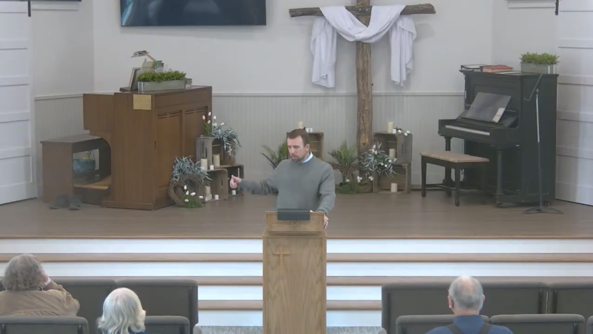
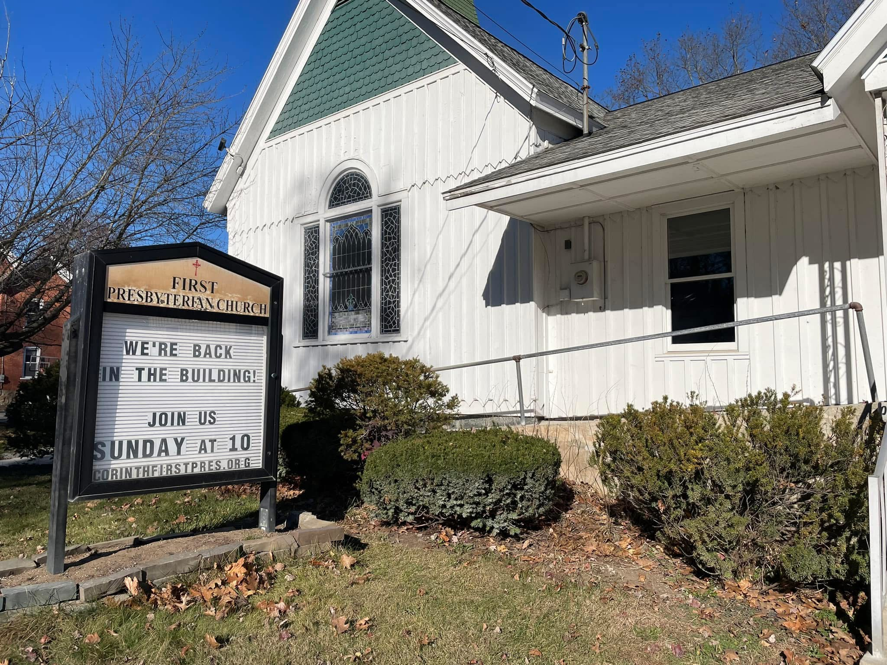
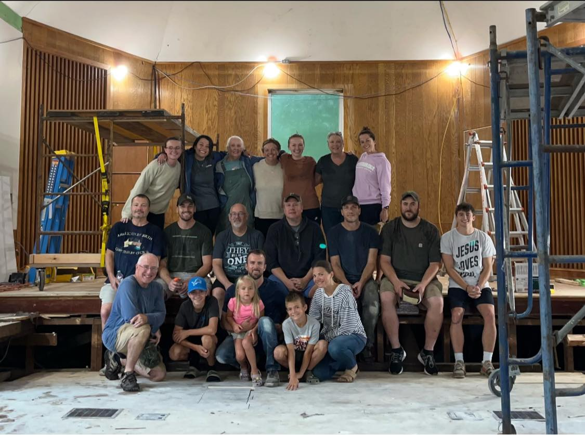

Sunday Worship
Join us every Sunday to experience uplifting music, practical teaching from the Word, and a welcoming community. Whether you're a lifelong believer or just exploring faith, there's a seat saved for you.

First Presbyterian Church is a welcoming community dedicated to sharing the hope and healing of Jesus. Join us for Sunday worship, livestream access, uplifting sermons, and local missions.
Sunday service is at 10:00 AM
We weren't meant to walk through life alone. Discover where you belong, grow in your faith, and find your people at First Presbyterian.

Join us every Sunday to experience uplifting music, practical teaching from the Word, and a welcoming community. Whether you're a lifelong believer or just exploring faith, there's a seat saved for you.

From family gatherings and youth retreats to community service days, there’s always an opportunity to build meaningful relationships. Check out our calendar to see what's coming up next.

Big churches feel smaller when you're part of a group. Connect with others in a relaxed setting to share life's ups and downs, study scripture, and pray for one another.

God has given you unique gifts to make a difference. Step into your purpose by serving on one of our volunteer teams, either inside our walls or out in the Corinth community.
Plan your first Sunday, find recurring gatherings, and see the easiest path into church life.
Join us Sundays at 10 AM for worship, prayer, Scripture, and a welcoming community.
Simple paths for visiting, watching, connecting, serving, and asking for care.
Join us this Sunday and know what to expect before you walk through the doors.
Learn the story, beliefs, and rhythms that shape First Presbyterian Church in Corinth.
Our mission is to grow in relationship with God and to share the good news of Jesus Christ in word and deed.
Sharing the hope and healing of Jesus through practical care, community partnership, and faithful mission.
We work together with Corinth Community Churches to operate a food pantry serving neighbors from 6 4th Street.
There are simple ways to help this week, from donating pantry items to joining prayer and mission support.
Join our livestream every Sunday at 10 AM, or catch up on recent messages
April 26, 2026
Watch the latest livestream from Corinth First Presbyterian Church, or choose another recent message from the library below.
We want to help you understand when to visit, where to go, and what to expect.
Join us this Sunday.
199 Palmer Ave., Corinth, NY 12822
We are here to answer any questions.
grace@corinthfirstpres.org